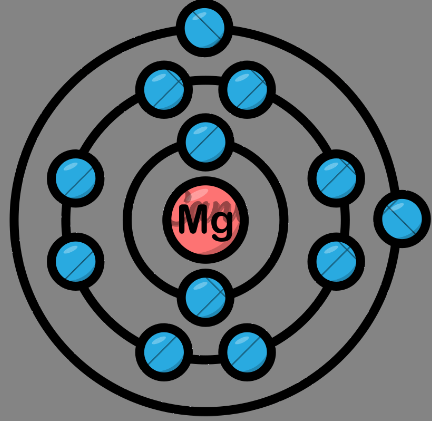

Que es un modelo atomico y para que sirve?
Se conoce como modelos atómicos a las distintas representaciones gráficas de la estructura y funcionamiento de los átomos.
Modelo atomico de Dalton
El modelo atómico de Dalton, propuesto entre 1803 y 1808, fue el primer modelo científico que explicó las reacciones químicas en proporciones estequiométricas fijas, conocido como la Ley de las proporciones constantes. También introdujo la Ley de las proporciones múltiples, que establece que al reaccionar dos sustancias para formar compuestos diferentes, las proporciones son números enteros.
Modelo atomico de thomson
En 1987, el físico inglés Joseph Thomson (1856-1940), interesado en estudiar las propiedades de los rayo catódicos, usó tubos, aplicando simultáneamente campos eléctricos y magnéticos sobre las cargas. Esto entregaría mayor información sobre su comportamiento.
En 1904, Thomson contaba con evidencias suficientes para desarrollar el primer modelo atómico. Según él, el átomo era una esfera de masa positiva uniforme, en la que se encontraban insertas las cargas negativas, lo que explicaba la neutralidad eléctrica de la materia. Este modelo fue conocido como budín de pasas.
Experimentos
1. Thomson hizo circular un haz de electrones (rayos catódicos) por un campo eléctrico y magnético.
2. Los rayos catódicos viajan en línea recta hasta llegar a las placas cargadas.
3. El campo eléctrico provocó una desviación de los rayos en un sentido, y del campo magnético, en sentido contrario. Equilibrando el efecto de los campos eléctricos y magnéticos. Con este experimento Thomson determinó la relación entre la carga y la masa del electrón.un poco de texto

Modelo atomico de rutheford
El Modelo de Rutherford establecía: El átomo tiene un núcleo central en el que están concentradas la carga positiva y prácticamente toda la masa. La carga positiva de los protones es compensada con la carga negativa de los electrones, que se hallan fuera del núcleo.
Experimentos
El experimento con el cual Rutherford determino la estructura del átomo, consistió de lo siguiente:
De una fuente radiactiva se disparaba un rayo de partículas alfa hacia una lámina de oro de una milésima de milímetro. alrededor de la lámina estaba colocada una pantalla para detectar las partículas alfa
Los resultados de este experimento fueron:
una mayoría de las partículas atravesaban la lámina de oro.
algunas partículas se desviaban ligeramente.
otras partículas se desviaban con un ángulo mayor, hasta 180º, prácticamente rebotando.
Según el modelo atómico de Thomson, todas las partículas deberían atravesar el átomo; el hecho de que algunas partículas alfa rebotaran significaba que habían "chocado" contra algo más denso en el átomo. Rutherford repitió este experimento con láminas de otros metales, observando resultados similares.


Modelo atomico de bohr
El modelo atómico de Bohr es una representación simplificada del átomo que propone que los electrones giran alrededor del núcleo en órbitas circulares fijas, como planetas alrededor del Sol. Cada órbita tiene asociada una energía específica, y los electrones pueden saltar de una órbita a otra absorbiendo o emitiendo energía en forma de luz. Ideas clave del modelo.
Importancia del modelo: Explicó el espectro del hidrógeno: El modelo de Bohr fue el primero en explicar con éxito el espectro de emisión del átomo de hidrógeno.
Base para modelos posteriores: Aunque tiene limitaciones, el modelo de Bohr sentó las bases para el desarrollo de la mecánica cuántica y modelos atómicos más complejos.

Modelo mecanico cuantico
El modelo mecánico cuántico del átomo ha sido fundamental para la investigación y desarrollo de tecnologías cuánticas en el campo de la química, la óptica, la computación y la física de partículas. Ha sido de utilidad para la simulación molecular y el desarrollo y la optimización de sistemas complejos.
Experimentos
1. Experimento de la doble rendija (1801): Demostró la naturaleza ondulatoria de la luz y, más tarde, de las partículas.
2. Experimento de la emisión de electrones por efecto fotoeléctrico (1905): Mostró que la luz puede comportarse como partículas (fotones).
3. Experimento de Franck-Hertz (1914): Verificó la existencia de niveles de energía discretos en los átomos.